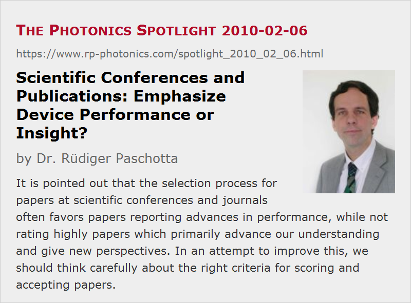

Scientific Conferences and Publications: Emphasize Device Performance or Insight?
Posted on 2010-02-06 (revised on 2010-02-11) as a part of the Photonics Spotlight (available as e-mail newsletter!)
Permanent link: https://www.rp-photonics.com/spotlight_2010_02_06.html
Author: Dr. Rüdiger Paschotta, RP Photonics Consulting GmbH
Abstract: It is pointed out that the selection process for papers at scientific conferences and journals often favors papers reporting advances in performance, while not rating highly papers which primarily advance our understanding and give new perspectives. In an attempt to improve this, we should think carefully about the right criteria for scoring and accepting papers.

When attending the conferences Photonics West in San Francisco and Advanced Solid-State Photonics (ASSP) in San Diego, I learned a lot, but also thought about some deficits which are typical for such conferences as well as for scientific journals. The selection process for the submitted papers often favors strongly such papers which report advances in laser performance, even though many of these papers do not generate any significant new insight. In many cases, good performance results from more or less systematically applying the already available knowledge, or even from details which people are not willing to disclose. I then often think that such presentations help me mostly to see that certain persons, research groups of companies can do certain things, but not really to learn much about the scientific technical subject – which would be more useful, of course.
Different Types of Papers
There are other types of papers which transfer really interesting and valuable information but nevertheless are more difficult to get accepted for presentation or publication. For example, there are papers presenting a theoretical analysis of certain technical aspects which are crucial for further progress in the field. Instead of appreciating such contributions, some committee members tend to give them low scores on the ground that an improved laser devices has not been demonstrated yet.
Admittedly, if someone wanted to build a better laser, didn't succeed for some reason and wants to present only the idea as such, this can rightly be considered less valuable than the completed experiment. Sooner or later, ideas need to be tested in our discipline. However, there can be very valuable information extracted from a theoretical analysis only. Even when the core result is a negative one, saying for example that a certain strategy to overcome some common problem does not work in certain situations, or does not work as expected, this can be very useful to know. As an example, I would definitely appreciate a paper which explains clearly why the common understanding of stimulated Brillouin scattering in optical fibers is not accurate, and what that means for strategies (based on new fiber designs, for example) for raising the Brillouin threshold. (Some people have strong views on such issues, but I found interesting information on those only in discussions with colleagues, but nothing new in the conference programs.) On the other hand, I may well live without being told that some research group tweaked a little more power out of a laser using a well-known technique with slightly improved components. So why are we then getting so much stuff of that kind?
Criteria for Scoring Papers
I think it is important to think carefully about the right criteria for scoring (and finally accepting or rejecting) papers. The final criterion should always be to what extent the community will presumably profit from a certain paper being presented or published. Various typically considered aspects are not always very relevant for this:
- Is the achieved device performance really convincing? This is rightly asked when a paper emphasizes performance itself, but even then one should also ask other questions: Did they just use better components, or do we learn about any new ideas, concepts, problems, etc.? Will the paper help others to get better, or is it more about raising the prestige of a certain research group or company?
- Have they got experimental results, or only theory? This question can be annoying when it means that we are interested only in devices and not in thoughts, analysis, concepts, etc. If you like, science is all about constructing mental models of reality, not primarily about building things. Therefore, to be contemptuous of theory (a system of mental models) is hardly compatible with being a scientist. The point is whether any experiment or any theoretical treatment is valuable, i.e., helpful, convincing, original, etc. We should pick the neat experiments as well as the helpful theory, while filtering out the poor stuff of any kind.
- Is the presented material well described? This can apply to experimental circumstances, to the characterization of devices, or to the assumptions underlying a theoretical model. We like to get informed clearly, and do not appreciate to get only preliminary results. However, we shouldn't insist on completeness where it is not relevant for the actual question of interest.
- Is it all correct? Obviously, I would have difficulties supporting a paper which I am sure is based on wrong reasoning. However, there is a risk that we let all non-controversial (but often boring) stuff pass while losing some of the important materials which may be somewhat more controversial. Particularly at conferences, it may not be a problem to have something presented which turns out to be questionable: even more people may have the opportunity to get some views corrected if such views are presented but then criticized.
- Are the authors already known to be good in their area? If yes, this may increase the confidence that something useful will be presented. However, for obvious reasons it is highly problematic to score more highly the well-known guys.
Inviting Useful Contributions
Having realized what kind of papers we need to advance our science and technology, we may not only score papers more diligently, but also encourage the submission of useful papers. Calls for papers usually define the subject areas which are considered suitable for some conference or some special issue of a journal. This is obviously needed, but it may help also to name specifically what types of presentations are welcome: not just reports of advances in performance, but also anything which improves our understanding, corrects problematic views and points out new perspectives.
Committee members regularly have to think about possible invited speakers. I would warmly recommend to think not only about which research groups or companies are leading in terms of impressive performance advances. We should also think about who should be able to give us new insight and perspectives by explaining and discussing clearly certain relevant aspects. It can also be a good starting point to ask what open questions we would like to be addressed. For example, these could be questions about some physical mechanisms or about the suitability of certain measures, techniques and technologies.
I am quite sure that our conferences and journals will become even more useful if we think more carefully about such things. We could have more of the stimulating ideas – including some controversial ones –, more precise reasoning and judgment, and less of the boring routine stuff which does not really bring forward our discipline.
This article is a posting of the Photonics Spotlight, authored by Dr. Rüdiger Paschotta. You may link to this page and cite it, because its location is permanent. See also the RP Photonics Encyclopedia.
Note that you can also receive the articles in the form of a newsletter or with an RSS feed.
Questions and Comments from Users
Here you can submit questions and comments. As far as they get accepted by the author, they will appear above this paragraph together with the author’s answer. The author will decide on acceptance based on certain criteria. Essentially, the issue must be of sufficiently broad interest.
Please do not enter personal data here; we would otherwise delete it soon. (See also our privacy declaration.) If you wish to receive personal feedback or consultancy from the author, please contact him e.g. via e-mail.
By submitting the information, you give your consent to the potential publication of your inputs on our website according to our rules. (If you later retract your consent, we will delete those inputs.) As your inputs are first reviewed by the author, they may be published with some delay.
|  |
If you like this page, please share the link with your friends and colleagues, e.g. via social media:
These sharing buttons are implemented in a privacy-friendly way!